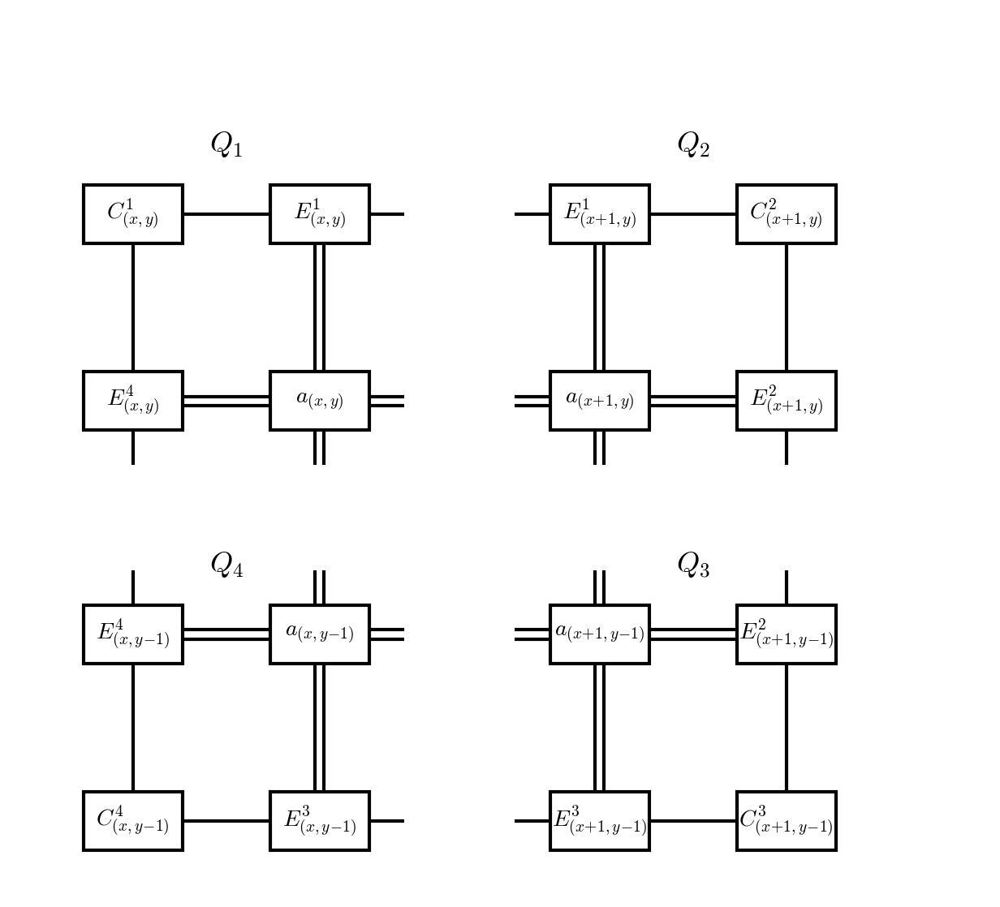

CTMRG
The corner transfer matrix renormalization group (CTMRG) algorithm iteratively computes the boundary tensors \(C^k\) and \(E^k\) that approximate the infinite extension of the double-layer tensor network [Nishino1996], [Baxter1978], [Orus2009].
Directional Moves
The boundary tensors are computed by iteratively absorbing rows or columns of the double-layer tensor network. Each absorption is called a directional move. An up-move at row \(y\) inserts the \(y+1\) row of double-layer tensors and absorbs it into the top boundary. The following diagram shows the tensors involved in a single up-move:

The top boundary tensors \(C^1, E^1, C^2\) and the inserted row \(a'\) are contracted together, and projectors \(P_1, P_2\) are applied to truncate the growing boundary bonds back to dimension \(\chi\):

The updated boundary tensors are:
Down, left, and right moves are defined analogously. For a unit cell of size \(N_x \times N_y\), a complete absorption from one direction requires \(N_y\) (or \(N_x\)) consecutive moves.
Projector Calculation
Each absorption step increases the boundary bond dimension by a factor of \(D^2\). To maintain a maximum boundary bond dimension \(\chi\), the updated boundary tensors must be projected onto a lower-dimensional subspace. The projectors are computed from a truncated SVD of the contracted environment [Orus2009], [Corboz2014].
1. Build quarter tensors
Four quarter tensors \(Q_k\) for \(k = 1,2,3,4\) are formed by contracting corner, edge, and site tensors at each quadrant of the environment:
{kind=link}
2. Form half-system tensors
Contract pairs of quarter tensors vertically to form the left and right halves of the environment:
3. SVD and truncation
The full environment is formed by contracting \(R_1\) and \(R_2\) along the bonds to be projected (indicated by the dashed line):

Decompose the contraction \(R_1 \cdot R_2\) via SVD along the bonds to be projected:
Truncate to the largest \(\chi\) singular values.
4. Form projectors
The projectors are constructed from the truncated singular vectors and values:
These projectors approximate a decomposition of the identity and are used in the boundary tensor absorption contractions above. Alternatively, half-system projectors may be formed from only one of \(R_1\) or \(R_2\), discarding correlations in the other half of the network [Corboz2014].
Convergence
CTMRG is iterated — performing directional moves in all four directions — until the boundary tensors reach a fixed point with respect to absorbing a full unit cell. The converged boundary tensors are then used for measurement of observables and, in the case of the full update, for constructing the tensor environment used in the ALS optimisation.
References
Baxter, Variational approximations for square lattice models in statistical mechanics, J. Stat. Phys. 19, 461 (1978).